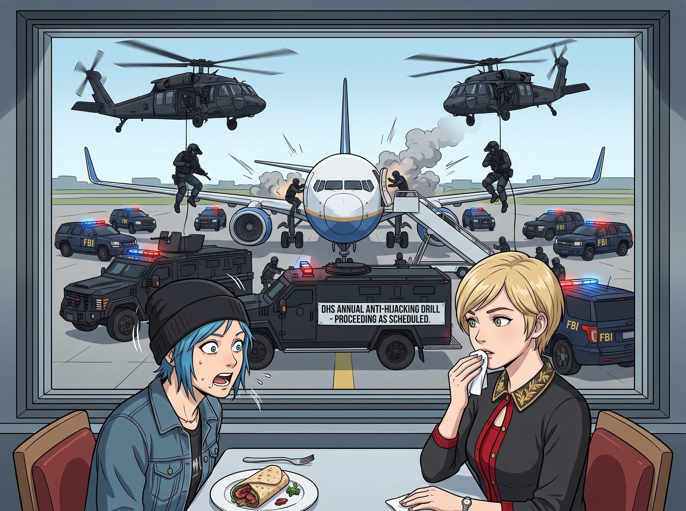
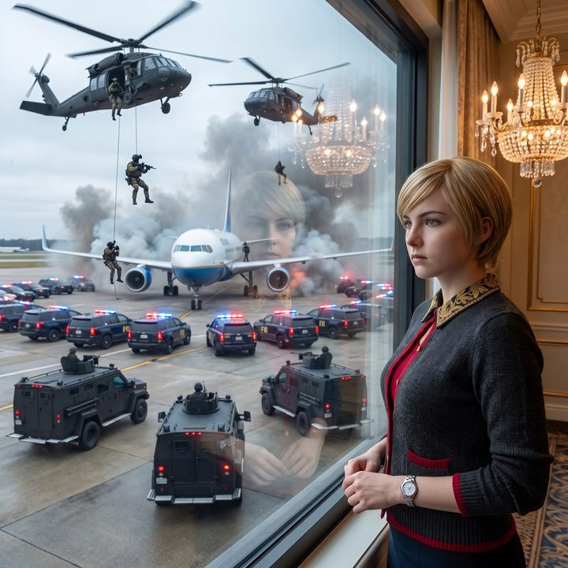

安可指令


就在 Chloe 嚥下最後一口和牛捲餅，而 Victoria 優雅地擦拭著嘴角時，貴賓室外的停機坪上突然爆發出一陣震耳欲聾的警笛聲。
三輛黑色的裝甲車和數打閃爍著紅藍警燈的聯邦調查局防彈休旅車，以極度暴力的甩尾姿態，將一架停在遠處的波音客機團團包圍。緊接著，兩架黑鷹直升機從低空呼嘯而過，全副武裝、戴著夜視鏡的人質救援隊特警像黑色的蜘蛛一樣，順著繩索精準地空降在機翼和艙門上。
伴隨著幾聲即使隔著防爆玻璃依然震耳欲聾的震撼彈悶響，特警們破門而入，完美的戰術隊形在停機坪上展開。
這是一場由國土安全部策劃已久、並且不知為何在經歷了昨晚全美航空系統癱瘓後依然如期舉行的年度反劫機實境演習。
一、免費的4D真人秀
「老天啊，這簡直比超級盃的中場秀還要硬核！」
Chloe 興奮地吹了一聲響亮的口哨。她直接把沙發椅拖到了落地窗前，像個在看4D IMAX動作大片的狂熱影迷一樣，一邊啃著剩下的半塊薯餅，一邊對著外面指指點點。「看到那個拿破門錘的傢伙了嗎？那動作太帥了！這才是真正的重金屬搖滾！」
Max 早就光著腳跑到了窗邊，手裡的寶麗來相機發出連續的咔嚓聲。她將鏡頭對準了窗外硝煙瀰漫的戰術演習，又巧妙地將玻璃上倒映著的奢華水晶吊燈與 Victoria 冷漠的臉龐疊合在一起，完美捕捉到了這種極度荒謬的末日階級反差感。
「太過癮了。」Chloe 意猶未盡地看著特警們押著扮演劫機犯的探員走下舷梯，轉過頭看向正端坐在螢幕前的實習生，「喂，Lily！這場實境電影太短了，妳能讓他們來個安可嗎？下一場能不能加點料，比如讓狙擊手把引擎打爆之類的？」
Victoria 放下裝著羽衣甘藍汁的水晶杯，翻了一個極度優雅的白眼。「Price，妳以為這是在看音樂節嗎？這是耗資幾百萬美金的聯邦安全演習，不是妳點擊滑鼠就能重播的點唱機。」
二、幽靈代碼的誘惑
然而，坐在工作台前的 Lily 卻放下了手裡的熱牛奶。她推了推反光的圓框眼鏡，大眼睛裡閃爍著一種讓 Victoria 瞬間感到頭皮發麻的行政運算光芒。
「理論上來說，這並非不可能，Chloe 學姐。」Lily 的手指在平板電腦上飛速滑動，語氣平靜得像是在點一份外賣。
「這場反劫機演習的預算是從國土安全部的高威脅都會區安全撥款中支出的。根據他們的合規手冊，如果演習結束後十五分鐘內，該空域的威脅評估矩陣再次出現超過閾值的異常，為了避免被國會審計委員會判定為演習失效，現場的戰術小隊在法律上被強制要求進行二次壓力測試。」
Lily 抬起頭，露出一個純潔無暇的微笑：「如果 Chloe 學姐想看安可，我只需要透過剛才為FAA修復的底層通訊協議，向塔台發送一個偽裝成高頻干擾信號的幽靈代碼。他們不僅會重演一次，而且根據升級條款，這次會出動防化部隊和裝甲爆破機器人哦。」
Chloe 的眼睛瞬間亮得像探照燈：「我要看機器人！Lily，馬上給他們發幽靈代碼！我要看他們把那架波音飛機的艙門給炸飛！」
三、被緊急制止的觸發
「妳敢！」
Victoria 猛地站了起來，嚇得花容失色，一把按住了 Lily 的平板電腦。「Lily，立刻把妳的手從鍵盤上拿開！如果妳現在觸發二次演習，我的私人飛機起飛許可將被強制延後至少四個小時！我拒絕為了讓這個藍髮混混看煙火，而繼續留在這個充滿了震撼彈噪音的破機場裡！」
就在這場是否要合法駭入聯邦演習來點一首安可曲的爭論即將升級時，桌上的平板電腦裡傳來了 Kate 溫柔的聲音。
小天使透過視訊畫面，也看到了窗外剛剛結束的戰術演習。她雙手合十，眼神裡充滿了悲憫與感動。
「哇，這些聯邦探員先生們真的很努力呢。」Kate 溫柔地注視著螢幕，「他們在這麼美好的清晨，為了保護大家的生命安全，穿著那麼厚重的衣服在陽光下奔跑，那些震撼彈的光芒，就像是在為和平祈禱的閃光燈一樣。Chloe，我們就讓這些辛苦的騎士們早點回去休息吧，他們一定也很想念家裡的熱咖啡呢。」
四、完美的合規與娛樂收益
面對 Kate 那足以淨化一切暴戾之氣的終極聖光，Chloe 舉在半空中的手無力地垂了下來。她無奈地嘆了口氣，看著窗外正在收隊的特警。
「好吧，Kate，妳贏了。沒有爆破機器人了。」Chloe 遺憾地攤了攤手，轉頭看向 Max，「不過至少妳拍到了好東西，對吧？」
Max 滿意地甩了甩手裡那疊厚厚的寶麗來底片，笑著點點頭。
而 Lily 則乖巧地關閉了威脅矩陣修改器，在平板上敲下了一行備註：「取消安可指令。已將該聯邦小隊的戰術走位數據作為高價值實體安保模型歸檔至車廂數據庫。本次舊金山出差，合規與娛樂收益：完美。」